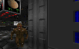
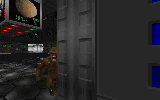
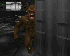

making it playable
for (int i = 0; i < 4; i++)
strip[i] = texture[start + i];4 bytes from a texture into a buffer. here, strip holds the colors for 4 pixels i’m drawing in one column of a wall. it’s already in memory, so c can go straight to strip[i] and change that one byte. the next iteration writes into the same buffer. with a postgres bytea, i’d call set_byte and assign the result back to strip. set_byte copies the whole value before changing the byte. 4 iterations, 4 copies of the buffer.
compiling doom’s c engine to wasm was one option. i’d write an interpreter in postgres to carry out the compiled instructions, including memory reads and writes like these. the original engine would still be deciding what to read, what to write, and how often to do it.
for that little loop, i’d be teaching postgres to read and write each byte separately. the bytes are next to each other in the texture. what i actually want to say is “give me those 4 bytes and leave the rest to me.” substring can return the whole run in one call. once i know which part of the wall is in view, i can ask postgres for the texture bytes i need to draw it.
so i kept doom’s maps and art. i wrote the engine in sql. from scratch.
the people at cedardb had already ported doom to sql. i ran sqldoom with the limits of planetscale’s $5 instance, 1/16 of a vcpu and 512 mib of ram. at 320×200, i got 0.033 fps. that’s 6 new frames in 3 minutes.
my engine was drawing at 160×100, so i tried that size with sqldoom too. i had it sample every other row and column while drawing. that got me 0.05 fps, or 9 new frames in 3 minutes.
one of my early builds at 160×100 got 0.25 fps. that’s 3 new frames in 12 seconds.
okay, say i double it. i get a new frame every 2 seconds. double it again and i’m at 1 fps. try aiming at a monster that gets a whole second to move before you see where it went.
i had a lot of code to go back through. at least i knew who wrote it.
the cost of taking a step
i profiled 350 game updates without drawing a single frame. postgres spent 452 ms in the game update function. 379 ms of that was in try_move, where the game decides whether the player or a monster can take its next step.
for a short move, i only need the walls close enough to get in the way. doom uses a grid to find them. i put a grid over the map too and gave each cell a list of the walls that touch it.

each cell in my grid held wall ids. postgres joined those ids back to the map tables to get the wall’s endpoints and find the sectors on either side.
the next step could take me past the same wall. postgres would do those joins again. i already had the endpoints when i loaded the map. why was i looking them up during play?
i was already going through every wall to build the grid, so i changed what went into each cell.
-- before
array_agg(
line.id order by line.id
)
-- after
array_agg(
row(
line.id,
lseg(line.a, line.b),
front.sector,
back.sector,
line.flags
)::doom.boundary
order by line.id
)| at map load | during a move | |
|---|---|---|
| before | store wall ids | read ids join tables |
| after | store wall data | read wall data |
lseg makes a line segment from the wall’s two endpoints. postgres can now read that segment straight out of the cell. if the wall is farther from the path than the player’s radius, i can skip it.
sectors each have their own floor and ceiling heights. if a nearby wall has a sector on both sides and its flags allow crossing, postgres still reads those heights from the current game state. a door can open while i’m walking toward it.
postgres still had to work out which cells to read. for a mostly horizontal step, the old query went column by column. it worked out which part of the path could reach each column, then used that part of the path and the player’s radius to generate the row numbers. for a mostly vertical step, it swapped rows and columns.
i already had the start and end of the move, so i took the rectangle around them and extended it by the player’s radius on all four sides. that gave me the first and last column and the first and last row. the cell lookup became two between conditions.
along the path

bounding box

the wall in that extra cell is too far from the step and gets dropped by the distance check. i pay for one more segment test here and save the per-column calculations. a short step gives me a small box, so there’s little room for extra cells.
i ran the same 350 inputs again in a separate local test, with the same query plan settings on both versions. game updates went from 540 ms to 67 ms. with a frame drawn after each update, the whole replay went from 1.55 s to 1.11 s. the recorded game state and the rendered pixels matched at every step.
drawing the room once
the pillar stays in the same place on screen as the imp walks past it. with the camera still, i can keep the picture of the room and draw the imp wherever it goes next.
i started by saving where to draw the room. for a wall, that meant remembering which bit of each screen column to paint. postgres could use that list again on the next frame. it still had to sample the textures and paint the room all over again.
so i saved the painted room, shades and all. the next time the imp moved, postgres could start with the room already drawn.


the pillar hides part of the imp in the second frame. paste the whole sprite over the saved room and there’s its arm again, right on top of the pillar.
i save one more value for each room pixel. it’s the depth, or how far in front of the camera the surface at that pixel is. when the imp covers part of the same screen column, postgres can tell where the pillar is closer.
ignoring room depth
checking saved depth

stroke.depth is the imp’s depth. zbuffer[idx] starts with the room’s depth at this pixel. if the imp has an opaque pixel there and it’s closer, i draw it and use the imp’s depth for the rest of the frame.
if stroke.depth < zbuffer[idx] then
column_data := set_byte(column_data, idx, get_byte(sample, i));
column_light := set_byte(column_light, idx, band);
zbuffer[idx] := stroke.depth;
end if;building the cache takes a render of the room, so i wait for 4 tics without movement or turn input before making one. a door can open while i’m standing still, though. before reusing the room, postgres checks the camera position and angle, the map revision, and the current state of doors, floors and lights. if any of those have changed, it draws the room again.
i rendered both imp positions from scratch and got the same pixels and shades as the cached renders. in a separate test at one fixed view in e1m3, i timed 50 frame requests with an empty cache and another 50 with the room cached. the median went from 5.97 ms to 2.11 ms.